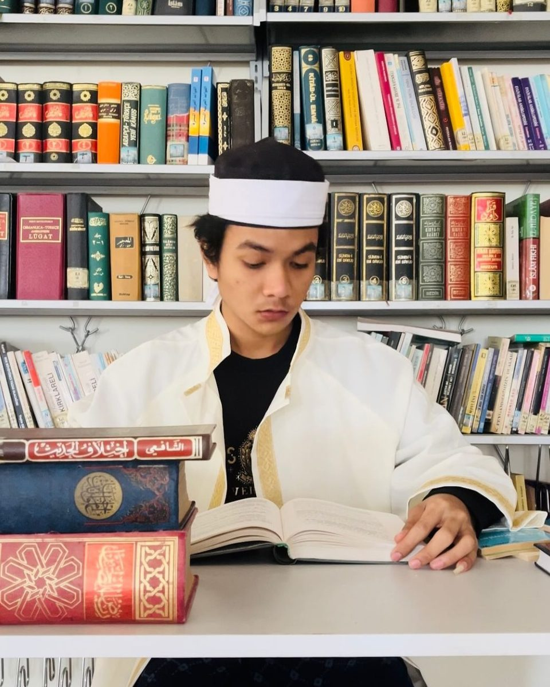

Money Exchange
Membaca pergerakan kurs dan menerjemahkannya menjadi keputusan yang masuk akal — bukan tebakan. Memahami mekanisme pasar valuta asing dari sisi praktik, bukan hanya teori.
Portofolio — Hafidz Ruhaimi
Tiga keahlian, satu kebiasaan yang sama: mengubah sesuatu yang mentah menjadi sesuatu yang bernilai — kurs jadi keputusan, kata jadi makna, biji jadi secangkir kopi yang layak dinikmati.

Tentang
Saya bekerja di persimpangan tiga dunia yang jarang bertemu: pasar valuta asing, pembelajaran bahasa, dan bisnis kopi. Ketiganya mengajarkan hal yang sama — nilai sesuatu tidak pernah tetap, ia selalu ditentukan oleh konteks, waktu, dan siapa yang memahami cara membacanya.
Saya percaya keahlian yang tampak tidak berhubungan justru saling memperkuat: insting membaca kurs membantu saya membaca pasar kopi, disiplin belajar bahasa membentuk cara saya menjelaskan hal rumit dengan sederhana kepada klien.
Keahlian
Membaca pergerakan kurs dan menerjemahkannya menjadi keputusan yang masuk akal — bukan tebakan. Memahami mekanisme pasar valuta asing dari sisi praktik, bukan hanya teori.
Mempelajari bahasa sebagai sistem, bukan hafalan — mencari pola, menguji lewat percakapan nyata, dan membangun kebiasaan belajar yang bertahan lebih lama dari motivasi awal.
Dari biji hingga cangkir: memahami rantai nilai kopi, karakter rasa tiap origin, dan bagaimana membangun bisnis kopi yang jujur soal kualitas.
Perjalanan
Mulai mempelajari mekanisme pasar valuta asing secara serius dan konsisten.
Membangun fondasi bisnis kopi dari riset origin hingga penyajian.
Membentuk sistem belajar bahasa harian yang terukur dan berkelanjutan.
Mulai membangun portofolio dan personal brand yang menyatukan ketiga keahlian.
Kontak
Terbuka untuk diskusi seputar money exchange, belajar bahasa, atau kopi — atau sekadar ngobrol.